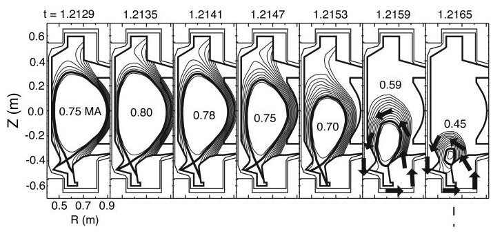
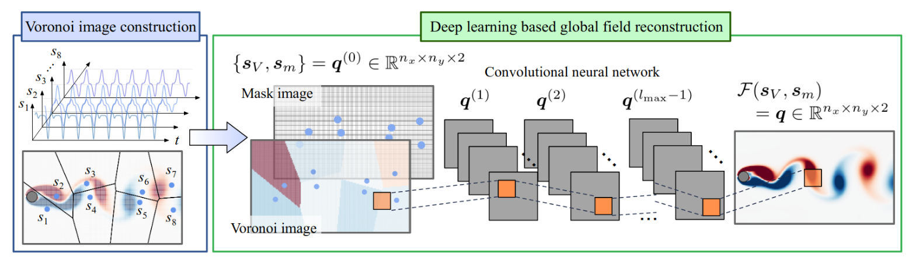
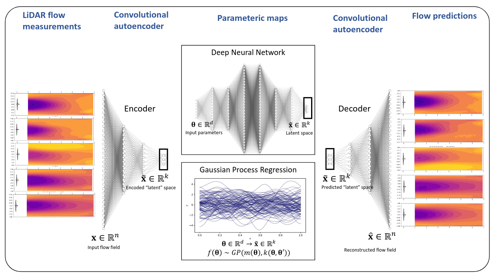
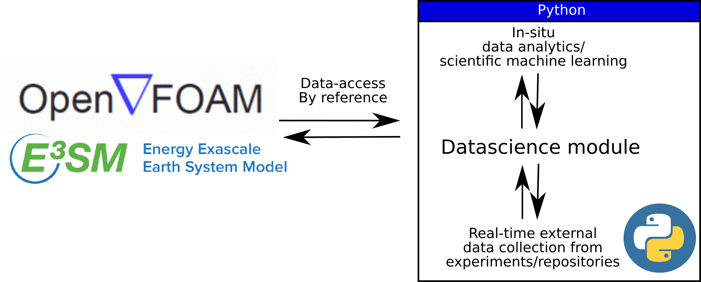

rmaulik@anl.gov Assistant Computational Scientist,
Mathematics and Computer Science Division,
Argonne National Laboratory.
&
Assistant Professor (Starting July 2023),
Department of Information Science and Technology,
Pennsylvania State University.
I am an Assistant Computational Scientist at the Mathematics and Computer Science division (MCS) at Argonne National Laboratory. Previously, I was the 2019 Margaret Butler Postdoctoral Fellow at Argonne National Laboratory and obtained my Ph.D. in Mechanical & Aerospace Engineering from Oklahoma State University. My interests are scientific machine learning, stochastic processes, high performance computing with applications to engineering, geoscience, plasma physics. An updated list of publications can be found on my Google Scholar profile and some of my software contributions can be found on Github.
If you're interested in a high-level overview of some of my research, check out these recordings of recent talks [1], [2], [3], [4]. If you are a student interested in an internship at Argonne along the lines of my research interests - please email me.
Starting July 2023, I will be an Assistant Professor in the Department of Information Science and Technology (IST) at Pennsylvania State University. I will also be jointly appointed at Argonne National Laboratory (Argonne) as a faculty scientist. I have several fully funded PhD positions in the Interdisciplinary Scientific Computing Laboratory, starting Fall 2023. Please contact me if you are interested. Note - applicants must apply online (deadline December 15) to the IST graduate program here.
In addition to the team at Penn State, the group will also be composed of postdoctoral fellows, graduate, and undergraduate students at Argonne and allow for research at the intersection of academia and National Labs. Successful applicants will have a unique PhD experience with access to Argonne's state-of-the-art supercomputing resources and the ability to work on large-scale research projects of strategic importance.
News
Romit will be speaking at the Rutgers Efficient AI Seminar Series on the 9th of February on his work at the intersection of high-performance computing and scientific machine learning.
Our minisymposium proposal titled "MS 423 - Recent Advances in Data-Intensive Physics-Informed Machine Learning for Accelerating Computational Science", jointly chaired by Qi Tang, Joshua Burby, and Romit Maulik, was accepted by USNCCM 2023 at Albuquerque New Mexico. Please consider submitting an abstract here. The deadline for submission is January 30.
Dr. Jianxun Wang from Notre Dame will be visiting us at Argonne on the 26th of January for discussing research in Physics-informed machine learning.
The research manifesto of the interdisciplinary scientific computing group.
Grand challenge problems
Improving geophysical forecast models with data science. We are building models to forecast variables (such as the daytime maximum temperature here) using scientific machine learning.

Tokamak disruption mitigation for nuclear fusion (image taken from Boozer et al., 2012). We are building closures and surrogate models to accelerate the computation of complex nuclear fusion reactors (i.e., system level simulations).
Scientific ML algorithm development

An algorithm that builds deep learning function approximation for sparse, unstructured, and time-varying observations (Nature Machine Intelligence 3 (11), 945-951, 2021).
A novel graph neural network architecture that not only makes predictions but also identifies salient physical features in an interpretable latent space (credit Shivam Barwey - postdoc).
Applied machine learning

Building a wind-turbine wake model for on-shore wind farms in the Texas panhandle using LIDAR and meteorological data (Neural Computing and Applications 34 (8), 6171-6186, 2022).
Characterizing the schooling of fish using generative machine learning. Here, the variation in the density of fish is captured by an optimal transport based forecast model (credit Jonah Botvinick-Greenhouse - visiting graduate student).
High performance heterogeneous computing

Building a scalable and reproducible ecosystem for scientific machine learning research (Journal of Computational Science 62 (2022): 101750).